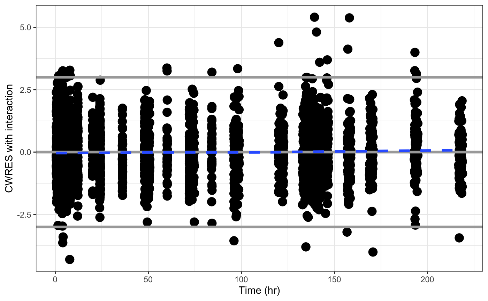

layer.RdLayer functions
layer_h(x, hline = gh(), add_layers = TRUE, ...) layer_s(x, smooth = gs(), add_layers = TRUE, ...) layer_a(x, abline = ga(), add_layers = TRUE, ...) layer_hs(x, ...) layer_sh(x, ...) layer_as(x, ...) layer_sa(x, ...) layer_dots(x, ...) gs( method = pm_opts$smooth.method, se = FALSE, lty = pm_opts$smooth.lty, lwd = pm_opts$smooth.lwd, col = pm_opts$smooth.col, ... ) ga( intercept = 0, slope = 1, lwd = pm_opts$abline.lwd, lty = pm_opts$abline.lty, col = pm_opts$abline.col, ... ) gh( yintercept = 0, lwd = pm_opts$hline.lwd, lty = pm_opts$hline.lty, col = pm_opts$hline.col, ... )
| x | a |
|---|---|
| hline | list of arguments for |
| add_layers | if |
| ... | passed to layering functions and geoms |
| smooth | list of arguments for |
| abline | list of arguments for |
| method | passed to the appropriate |
| se | passed to the appropriate |
| lty | passed to the appropriate |
| lwd | passed to the appropriate |
| col | passed to the appropriate |
| intercept | passed to |
| slope | passed to |
| yintercept | passed to |
Function names can be decoded as: h indicates horizontal
reference line, s indicates smoothing line,
a indicates abline (typically a line of
identity). The order of the the codes indicates the
order in which the layers are applied. For example,
layer_hs means to first add a horizontal reference
line and then add a smoothing line. Likewise, layer_s
adds a smoother, layer_a adds identity line, and
layer_y adds a horizontal reference line.
gs, ga, and gh are helper functions to create
default arguments to geom_smooth, geom_abline, and
geom_hline, respectively. The gx series
of functions are not exported.
#>pmplots:::gs()#> $method #> [1] "loess" #> #> $se #> [1] FALSE #> #> $lty #> [1] 2 #> #> $lwd #> [1] 1.35 #> #> $col #> [1] "#3366FF" #>